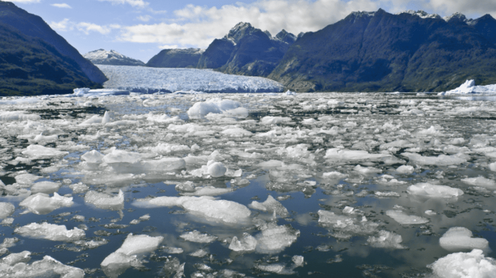
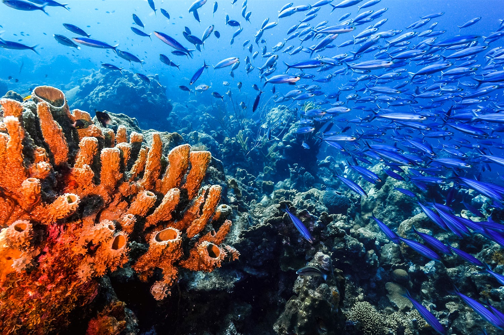
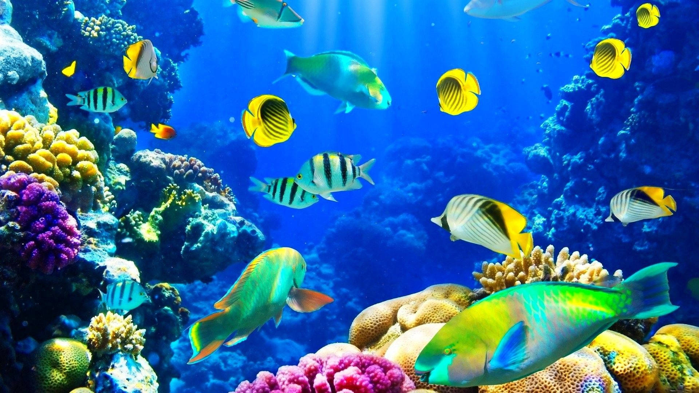

Rising Sea Temperatures
The increase in global temperatures has led to warmer ocean waters, disrupting marine ecosystems. Species sensitive to temperature changes, such as corals and certain fish, are particularly vulnerable. Warmer waters can lead to coral bleaching, reducing habitats for countless marine species.
Ocean Acidification
Rising atmospheric CO2 levels result in more CO2 dissolving into oceans, causing acidification. This change in pH levels adversely affects calcifying organisms such as shellfish and corals, weakening their shells and skeletons, making survival harder.

Sea-Level Rise
Melting polar ice caps and glaciers contribute to rising sea levels, inundating coastal habitats and leading to the loss of vital ecosystems like mangroves and estuaries. These habitats are nurseries for many marine species and crucial for maintaining biodiversity.

Impact on Marine Biodiversity
Climate change alters the distribution and behavior of marine species, leading to shifts in population dynamics. Some species may migrate to cooler waters, while others may face increased mortality rates. This disruption can reduce genetic diversity and potentially collapse local marine populations.
Mitigation Strategies
Addressing climate change impacts on marine life requires a multifaceted approach. Strategies include reducing greenhouse gas emissions, restoring damaged marine habitats, implementing sustainable fishing practices, and establishing marine protected areas. Ongoing research and monitoring are essential for developing effective conservation measures.
